MeetSite (giải pháp ITKA) là nền tảng web số hoá toàn bộ quy trình tổ chức hội nghị: từ lập kế hoạch, phân công nhân sự, mời đại biểu, xếp chỗ ngồi, điểm danh đa phương thức, chia sẻ tài liệu, khảo sát đến báo cáo hiệu quả (KPI) — tất cả trên một nền tảng duy nhất.
Mở trình duyệt và truy cập địa chỉ hệ thống (mặc định nội bộ: http://localhost:5014). Màn hình sẽ tự chuyển sang trang đăng nhập.
| Tài khoản | Mật khẩu | Vai trò | Phạm vi |
|---|---|---|---|
admin | admin@123 | Quản trị | Toàn quyền + Phân quyền |
btc | btc@123 | Ban tổ chức | Toàn quyền nghiệp vụ hội nghị |
kythuat | kt@123 | Kỹ thuật viên | Sơ đồ, Điểm danh |
letan | lt@123 | Lễ tân | Điểm danh, tra cứu đại biểu |
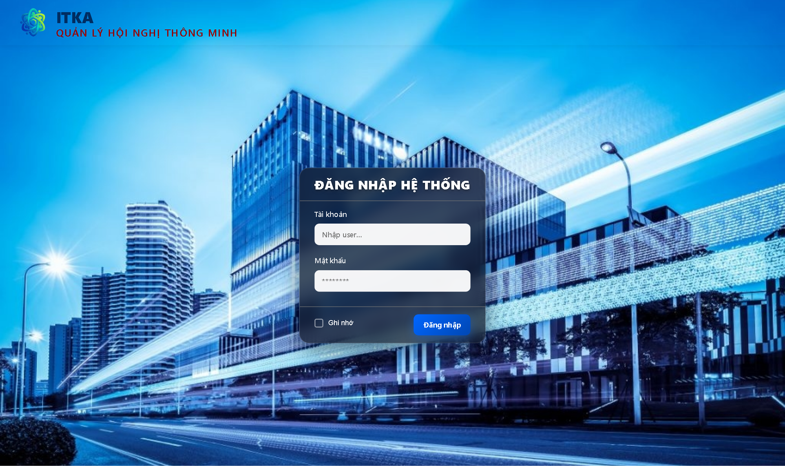
Sau khi đăng nhập, không gian làm việc gồm thanh điều hướng ngang phía trên, được gom theo nhóm:
Phần này hướng dẫn tuần tự từng bước để tạo và vận hành trọn vẹn một hội nghị. Mỗi bước nêu rõ thao tác bấm nút, điền thông tin và kết quả mong đợi.
Vào Hội nghị & Phiên (nhóm Tổ chức). Trang đầu là danh sách hội nghị; bấm Thêm hội nghị để mở biểu mẫu.
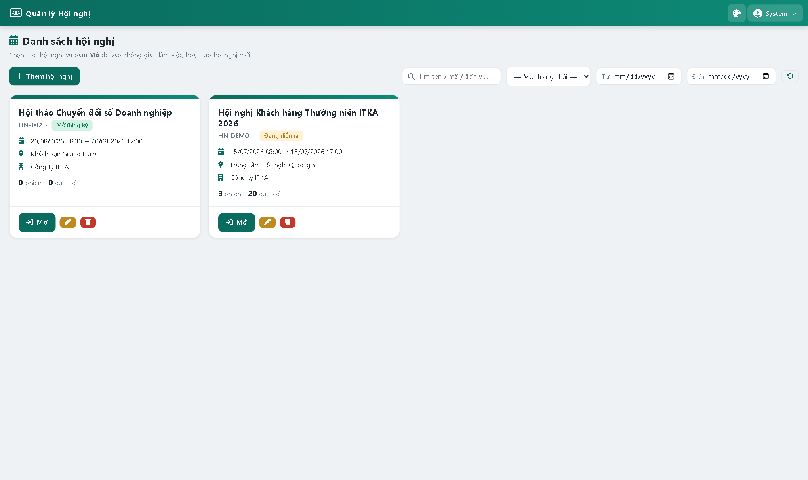
Điền các trường: Tên hội nghị (bắt buộc), Mã (tự sinh nếu trống), Mô tả, Ngày bắt đầu/kết thúc, Địa điểm, Đơn vị tổ chức, Trạng thái (Nháp → Mở đăng ký → Đang diễn ra → Đã chốt). Bấm Lưu.
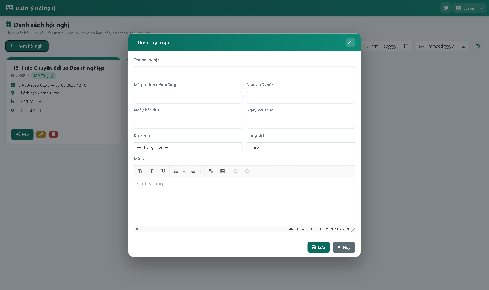
Mở hội nghị vừa tạo, sang tab Hội nghị & Phiên để thêm các phiên họp (tên phiên, phòng, thời gian bắt đầu/kết thúc, thứ tự) và gán diễn giả cho từng phiên (vai trò: chủ tọa / diễn giả / điều phối).
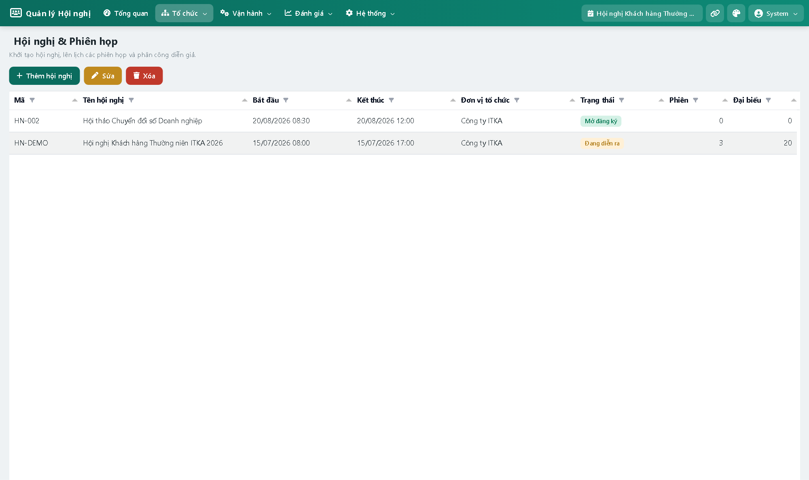
Vào Phân công nhiệm vụ (nhóm Tổ chức). Màn hình gồm 2 phần: Danh mục nhân viên tổ chức và Bảng nhiệm vụ (Kanban).
Bấm Thêm nhân viên, điền Họ tên, Vai trò tổ chức (Ban tổ chức / Kỹ thuật / Lễ tân / Hậu cần / An ninh / Truyền thông), chức danh, liên hệ. Tích Dùng chung mọi hội nghị nếu là nhân sự cố định.
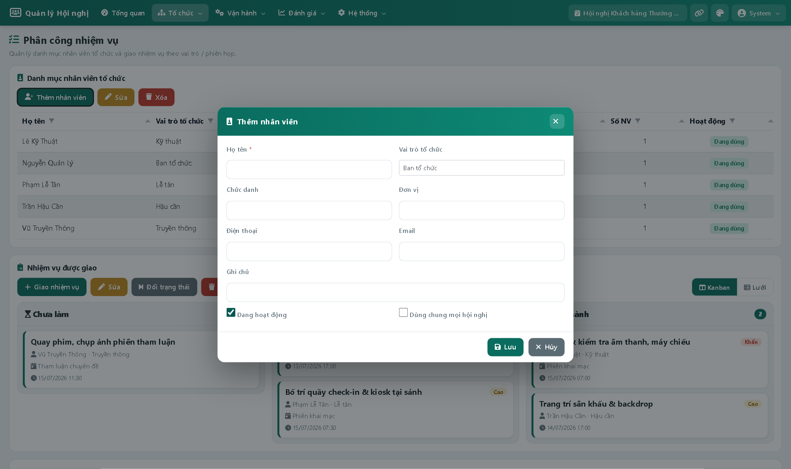
Bấm Giao nhiệm vụ: chọn nhân viên, tên nhiệm vụ, phiên liên quan (tuỳ chọn), độ ưu tiên (Thường/Cao/Khẩn), thời hạn và trạng thái.
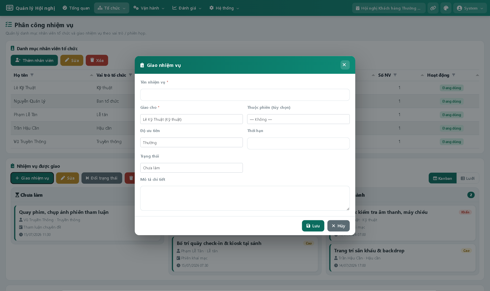
Nhiệm vụ hiển thị thành 3 cột Chưa làm · Đang làm · Hoàn thành. Kéo-thả thẻ sang cột khác để đổi trạng thái tức thì. Thẻ quá hạn được tô đỏ; banner phía trên nhắc các việc quá hạn. Có thể chuyển nút Kanban ⇄ Lưới. Biểu đồ tiến độ theo nhân viên nằm dưới cùng.
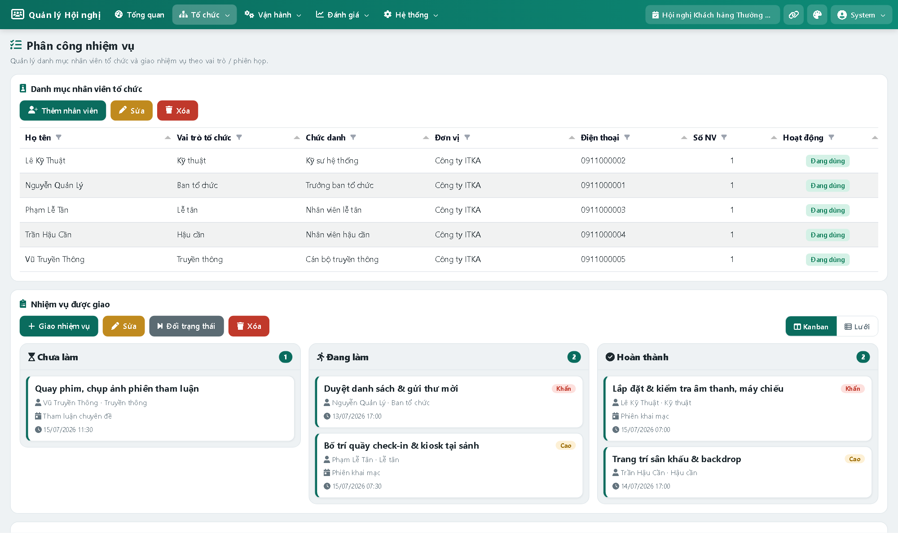
Vào Đại biểu (nhóm Tổ chức). Tại đây quản lý người tham dự: thêm/sửa/xóa, phân nhóm, gắn nhãn VIP, và sinh mã QR cá nhân.
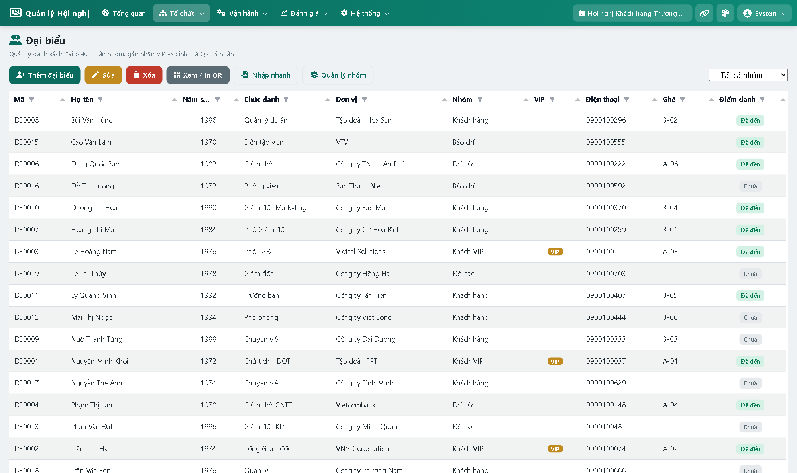
Bấm Thêm đại biểu và điền: Họ tên, Năm sinh, chức danh, đơn vị, điện thoại, email, Số CCCD (để điểm danh bằng căn cước), Mã thẻ NFC (để điểm danh bằng thẻ), nhóm, VIP.
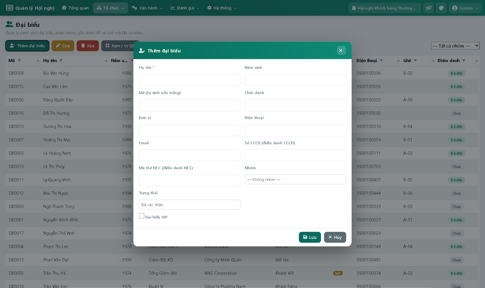
| hoặc Tab). Nút Xem / In QR tạo mã QR cá nhân để in thẻ đại biểu.Vào Sơ đồ chỗ ngồi (nhóm Tổ chức). Sơ đồ ghế được lập theo từng phòng họp: chọn phòng ở ô Phòng họp trên thanh công cụ — mỗi phòng có một sơ đồ riêng (đổi phòng sẽ chuyển sang sơ đồ tương ứng).
Bấm Sinh lưới ghế (nhập số hàng × số ghế/hàng) để tạo nhanh; hoặc Thêm ghế / double-click vùng trống để chèn ghế lẻ. Nhấn giữ & kéo để di chuyển ghế.
Chuột phải một ghế → Đánh dấu ghế VIP (ghế chuyển màu cam), rồi kéo-thả đại biểu VIP từ danh sách “Chưa xếp ghế” bên phải vào đúng ghế VIP mong muốn.
Bấm Phân ngẫu nhiên: hệ thống tự xếp các đại biểu thường (không VIP) chưa có ghế vào những ghế thường còn trống một cách ngẫu nhiên. Ghế VIP và đại biểu VIP được giữ nguyên để Ban tổ chức chủ động sắp xếp. Khi hoàn tất, bấm Chốt sơ đồ để khóa chỉnh sửa.
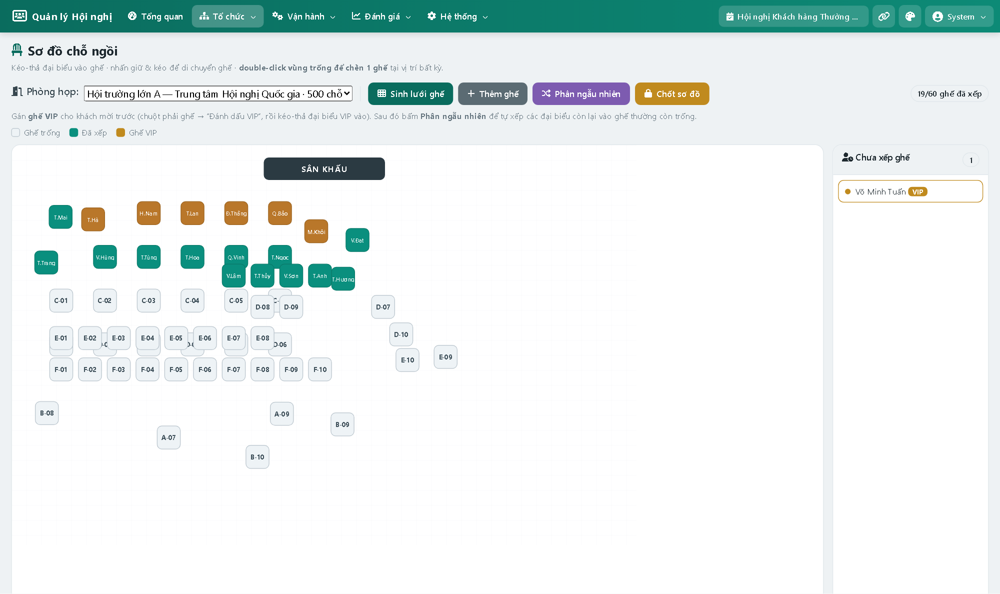
Vào Thư mời hội nghị (nhóm Tổ chức). Đây là cửa sổ quản lý thư mời cho từng đại biểu, kèm 4 thẻ chỉ số và đồng hồ tỷ lệ gửi đạt được.
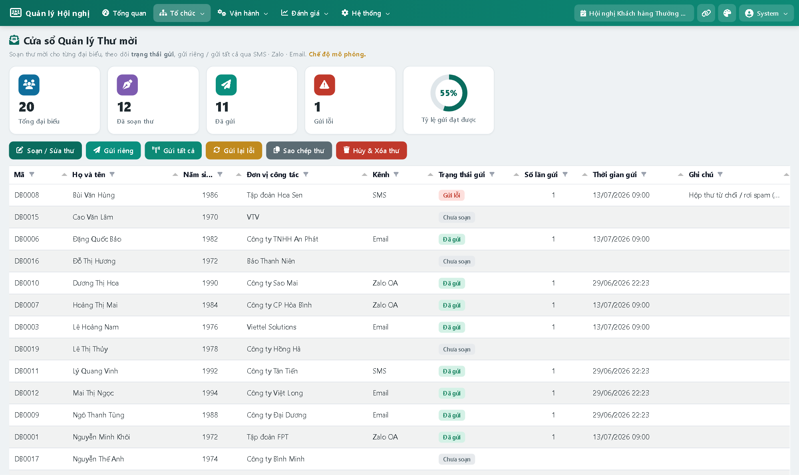
Chọn một đại biểu rồi bấm Soạn / Sửa thư. Điền Kênh gửi (SMS / Zalo OA / Email), Địa điểm, Thời gian, Lưu ý khi tham gia, và Nội dung. Có thể chèn biến cá nhân hóa: {HoTen}, {MaGhe}, {TenHoiNghi}, {DiaDiem}, {ThoiGian}, {LuuY}.
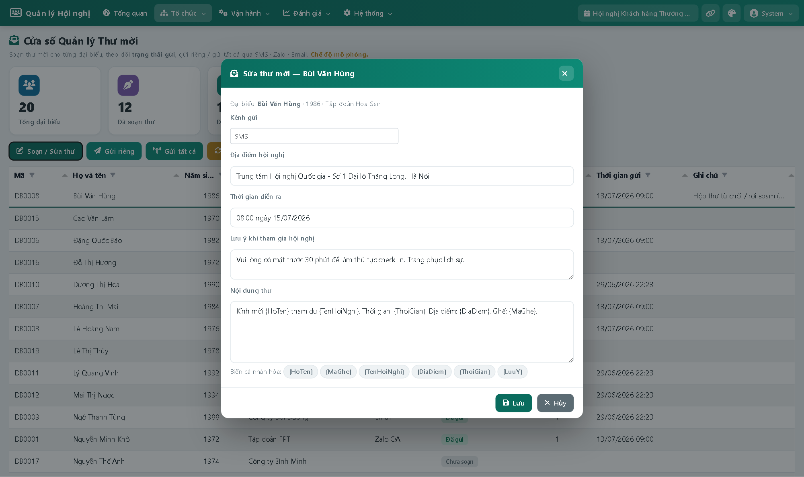
Sau mỗi lần gửi, cột Trạng thái gửi tự đổi màu và đồng hồ tỷ lệ cập nhật.
IMeetSender.Vào Tin nhắn SMS/Zalo (nhóm Vận hành). Khác với thư mời cá nhân, đây là công cụ gửi hàng loạt theo chiến dịch (nhắc lịch, thông báo). Bấm Soạn chiến dịch, chọn kênh, phạm vi (Tất cả / Theo nhóm / Chỉ VIP), nội dung (có biến cá nhân hóa), rồi Gửi. Có thư viện Mẫu tin dùng lại.
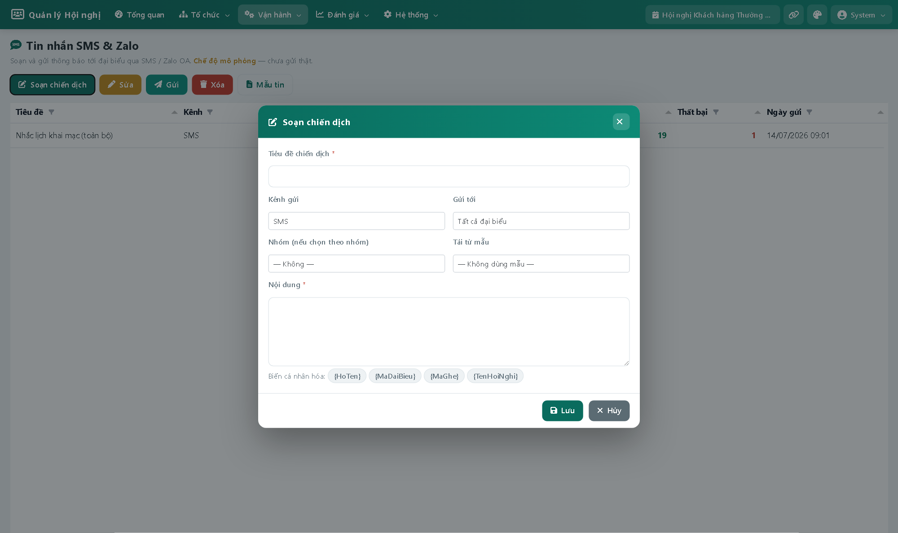
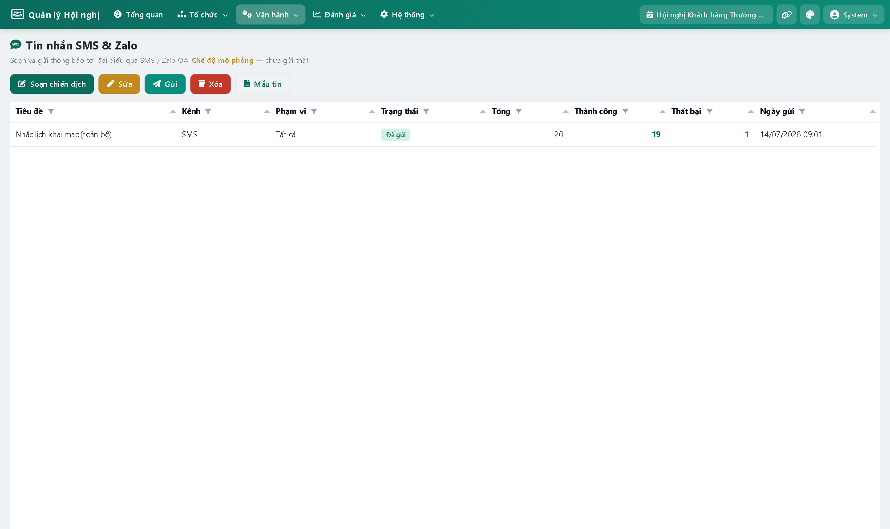
Vào Tài liệu (nhóm Vận hành). Tải lên văn bản/tài liệu số, đặt phạm vi truy cập (công khai hoặc theo nhóm đại biểu), bật chia sẻ QR để đại biểu quét xem trên điện thoại. Hệ thống đếm lượt xem từng tài liệu.
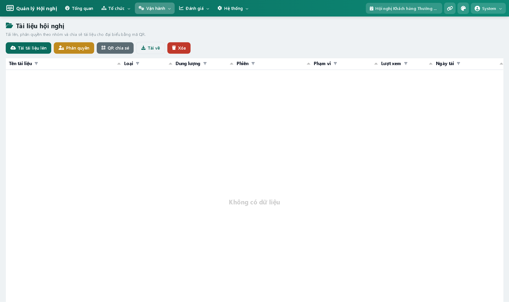
Vào Khảo sát (nhóm Đánh giá). Tạo phiếu với nhiều loại câu hỏi: thang điểm 1–5, một lựa chọn, nhiều lựa chọn, văn bản. Mở/đóng phiếu và tạo QR để đại biểu trả lời.
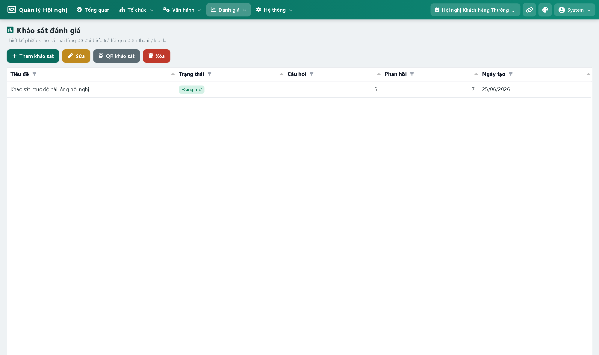
Tại sảnh sự kiện, mở màn Kiosk (nút “Liên kết Kiosk” trên thanh tiêu đề hoặc nút Mở màn Kiosk ở trang Điểm danh). Kiosk hỗ trợ 4 phương thức: QR · NFC · CCCD · Nhận diện khuôn mặt.
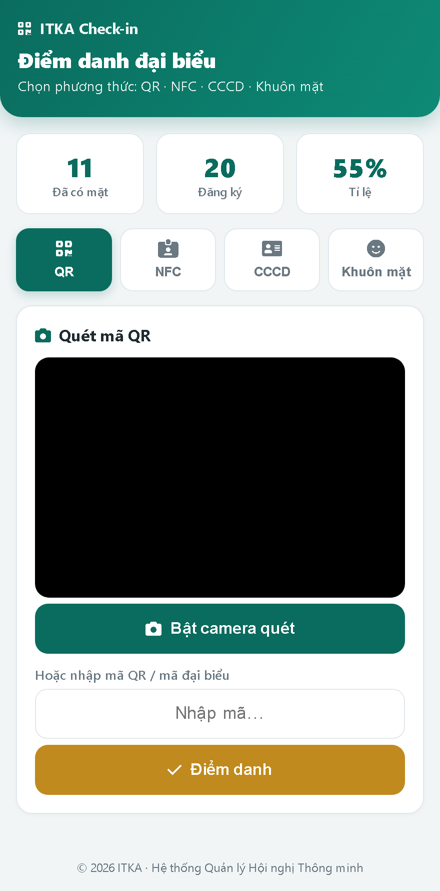
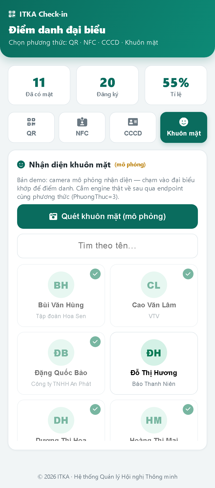
Trên máy Ban tổ chức, màn Điểm danh hiển thị thống kê thời gian thực, cho phép điểm danh thủ công, hoàn tác, và xem nhật ký (kèm phương thức QR/NFC/CCCD/Khuôn mặt/Thủ công).
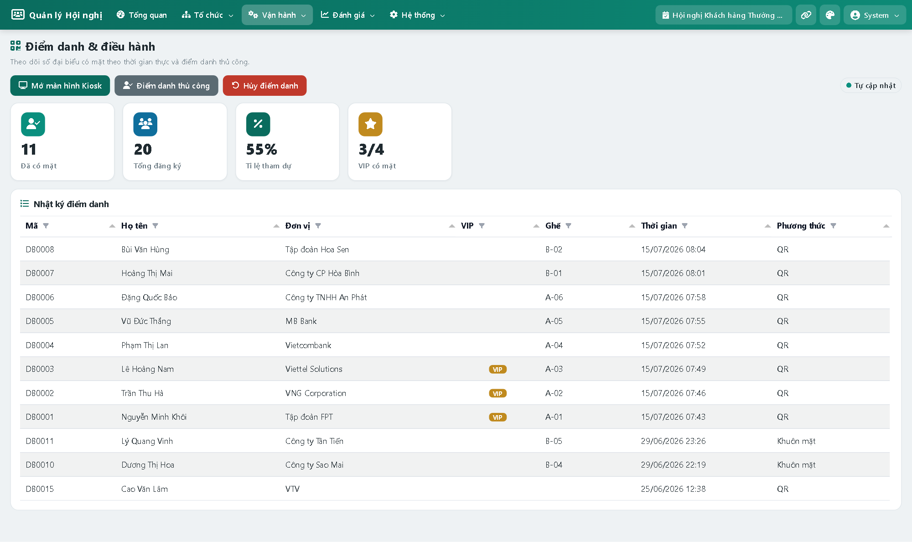
Mỗi đại biểu quét QR cá nhân để mở cổng riêng: xem thông tin, vị trí ghế, tài liệu được phép, và khảo sát đang mở. Sau hội nghị, đại biểu quét mã trả lời khảo sát ngay trên điện thoại.
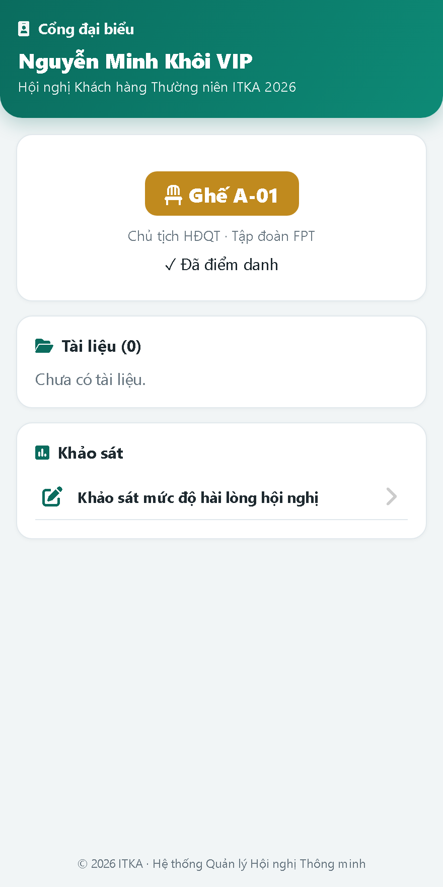
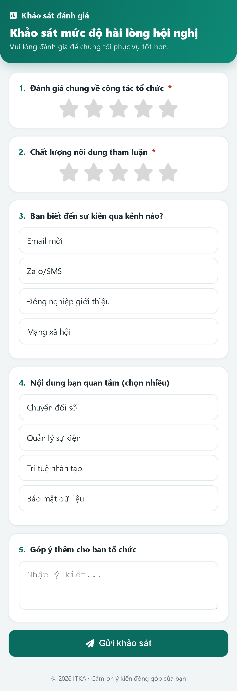
Vào Báo cáo & KPI (nhóm Đánh giá). Hệ thống tự tổng hợp: tỉ lệ tham dự thực tế, số phiên, lượt xem tài liệu, tỷ lệ gửi thư mời, số tin đã gửi, mức hài lòng trung bình; cùng các biểu đồ: điểm danh theo phiên, check-in theo phương thức, cơ cấu đại biểu theo nhóm, lượt xem tài liệu, điểm hài lòng theo tiêu chí.
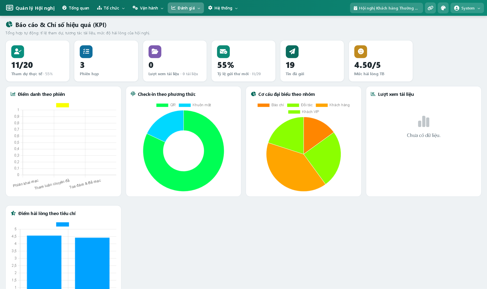
Bảng điều khiển nhanh của hội nghị đang chọn: số phiên, số đại biểu, số đã check-in, tỉ lệ, số VIP, số tài liệu, số khảo sát và biểu đồ điểm danh theo phiên.
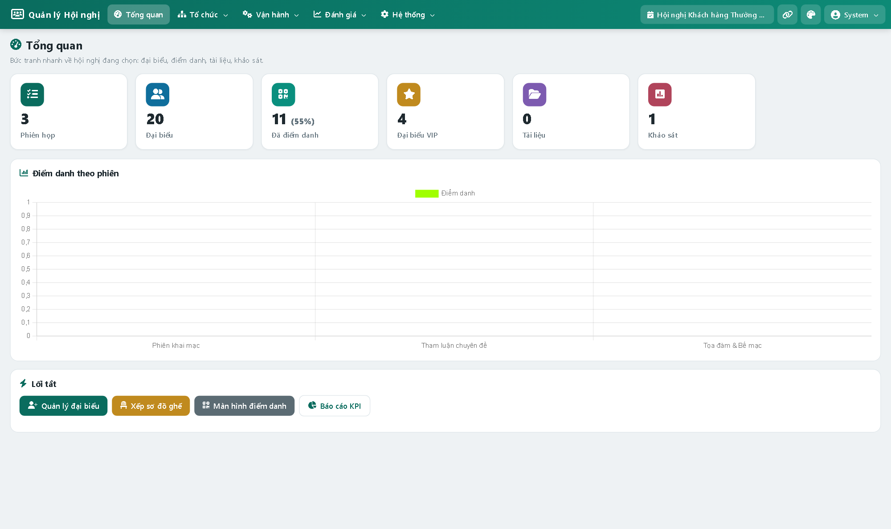
| Màn hình | Đường dẫn | Chức năng chính |
|---|---|---|
| Hội nghị & Phiên | /HoiNghi | Tạo hội nghị, phiên họp, diễn giả; dashboard tổng quan. |
| Phân công nhiệm vụ Mới | /PhanCong | Danh mục nhân viên; giao & theo dõi nhiệm vụ (Kanban kéo-thả, nhắc hạn, biểu đồ tiến độ). |
| Đại biểu | /DaiBieu | CRUD đại biểu, nhóm, VIP, Năm sinh/CCCD/NFC, QR cá nhân, nhập nhanh. |
| Sơ đồ chỗ ngồi | /SoDo | Thiết kế hội trường, kéo-thả đại biểu vào ghế, chốt sơ đồ. |
| Thư mời hội nghị Mới | /ThuMoi | Soạn thư theo từng đại biểu; Gửi riêng/Gửi tất cả/Gửi lại lỗi; Sao chép; tỷ lệ gửi. |
| Điểm danh | /CheckIn | Thống kê realtime, điểm danh thủ công, mở Kiosk, nhật ký theo phương thức. |
| Tin nhắn SMS/Zalo | /TinNhan | Chiến dịch gửi hàng loạt, mẫu tin, nhật ký gửi. |
| Tài liệu | /TaiLieu | Tải lên, phân quyền theo nhóm, chia sẻ QR, đếm lượt xem. |
| Khảo sát | /KhaoSat | Thiết kế phiếu (thang điểm/lựa chọn/văn bản), QR. |
| Báo cáo & KPI | /BaoCao | Tổng hợp chỉ số + biểu đồ; tỷ lệ gửi thư mời; check-in theo phương thức. |
| Phân quyền | /PhanQuyen | Vai trò, ma trận quyền chi tiết, gán vai trò cho người dùng (chỉ Quản trị). |
| Kiosk (công khai) | /meetpublic/Kiosk | Điểm danh đa phương thức QR/NFC/CCCD/Khuôn mặt. |
| Cổng đại biểu | /meetpublic/DaiBieu?token= | Thông tin, ghế, tài liệu, khảo sát của đại biểu. |
Hệ thống dùng cơ chế RBAC: mỗi nhóm chức năng là một GroupKey, mỗi vai trò được cấp các quyền Xem / Thêm / Sửa / Xóa. Quản trị viên vào Phân quyền để tạo vai trò, tích ma trận quyền và gán vai trò cho người dùng. Riêng màn Phân quyền chỉ dành cho Quản trị viên (gác cứng ở máy chủ — vai trò khác mở trực tiếp bằng URL sẽ bị từ chối 403).
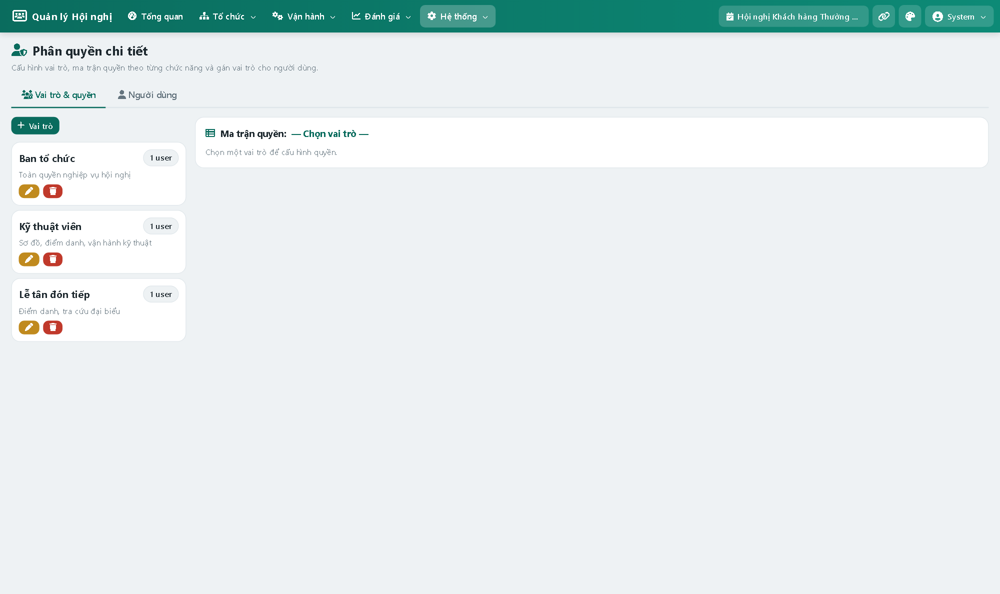
✔ = mở được · — = bị chặn (403).
| Màn hình | Quản trị | Ban tổ chức | Kỹ thuật | Lễ tân |
|---|---|---|---|---|
| Hội nghị & Phiên | ✔ | ✔ | ✔ (xem) | ✔ (xem) |
| Phân công nhiệm vụ | ✔ | ✔ | — | — |
| Đại biểu | ✔ | ✔ | — | ✔ (xem) |
| Sơ đồ chỗ ngồi | ✔ | ✔ | ✔ | — |
| Thư mời hội nghị | ✔ | ✔ | — | — |
| Điểm danh | ✔ | ✔ | ✔ | ✔ |
| Tin nhắn SMS/Zalo | ✔ | ✔ | — | — |
| Tài liệu | ✔ | ✔ | ✔ (xem) | — |
| Khảo sát | ✔ | ✔ | — | — |
| Báo cáo & KPI | ✔ | ✔ | ✔ (xem) | — |
| Phân quyền | ✔ | — | — | — |
Bản chạy thực tế (Release) được publish tại D:\PubSite\MeetSite, gồm Site.dll, web.config (cấu hình IIS – ANCM in-process), appsettings.json và thư mục Modules chứa các module nghiệp vụ (UIHoiNghi.dll, UILogin.dll).
Mở PowerShell và chạy: dotnet D:\PubSite\MeetSite\Site.dll --urls http://localhost:5014 — truy cập http://localhost:5014.
Yêu cầu: cài IIS và .NET 8 Hosting Bundle (ASP.NET Core Module V2). Sau đó tạo Website trỏ vào thư mục publish, binding cổng 5014. Xem file SETUP_IIS_MeetSite.ps1 kèm theo (chạy với quyền Administrator).
MeetDB, bảng & dữ liệu mẫu. Đổi máy chủ/CSDL trong appsettings.json → ConnectionStrings:DefaultConnection.dpkeys: do ASP.NET Core sinh ra để lưu khóa Data Protection (mã hóa cookie phiên đăng nhập). Nhờ lưu cố định ra đĩa, người dùng không bị đăng xuất mỗi khi khởi động lại ứng dụng. Không xóa thư mục này khi đang vận hành.— Hết — © 2026 ITKA · Hệ thống Quản lý Hội nghị Thông minh (MeetSite)